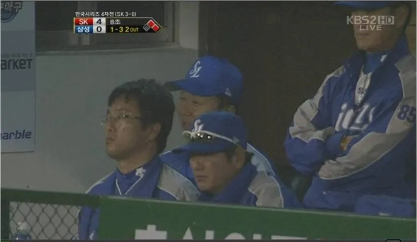
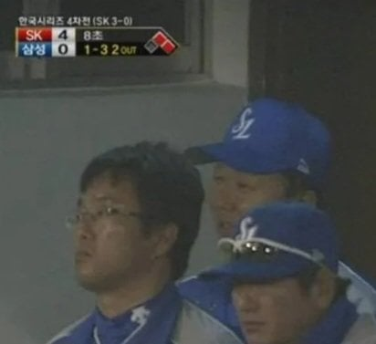
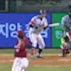

4차전 스윕패 직전인데 감독이 실성함 ㅅㅂㅋㅋㅋㅋㅋㅋㅋㅋ


4차전 스윕패 직전인데 감독이 실성함 ㅅㅂㅋㅋㅋㅋㅋㅋㅋㅋ
히히 야구 재밌당
투수 발판 잘못밟아서 휘청거리니 웃는거 귀엽던데

이야 야신 감독님 잘하네
한국시리즈 전에 3년 연장계약까지 했는데
저 꼴을 직관중인 이재용이 보고 바로 경질시킴
선동렬 사실 한국시리즈 간 것만으로도 잘한거긴 했는데 저때ㅋㅋ
하필 그 뒤에 류중일이 왕조 세우고 양신 쫓아낸거 때문에 묻혔지
관중난입해서 하이파이브하는것도 선동렬 ㅋㅋㅋ
간만이네 멍게